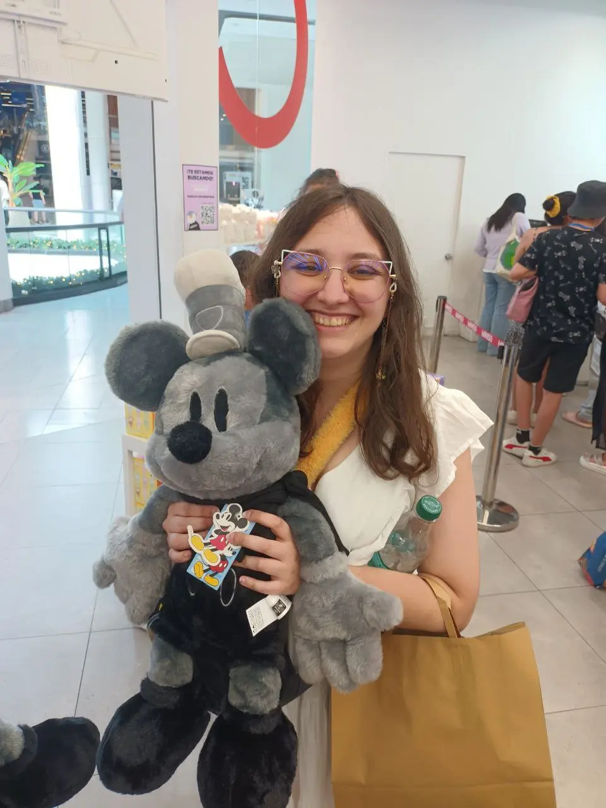
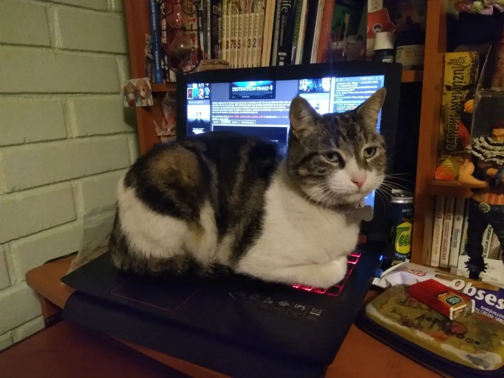
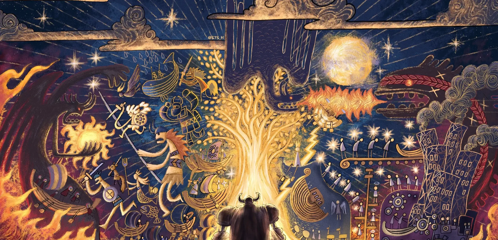
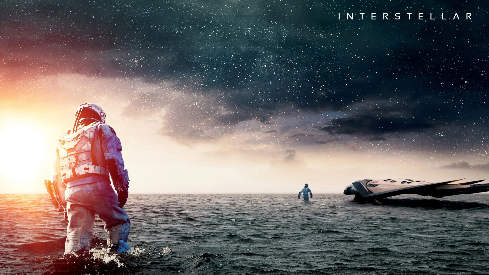
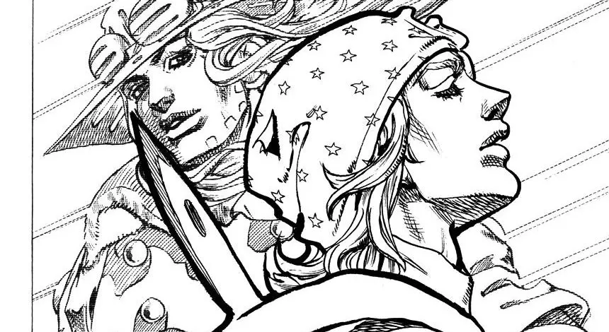
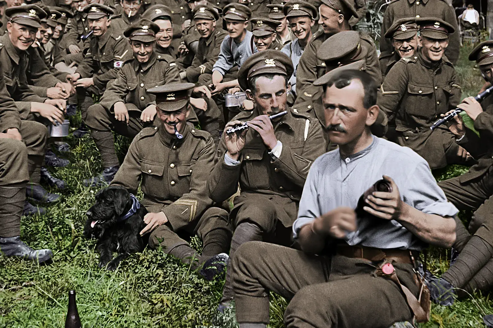
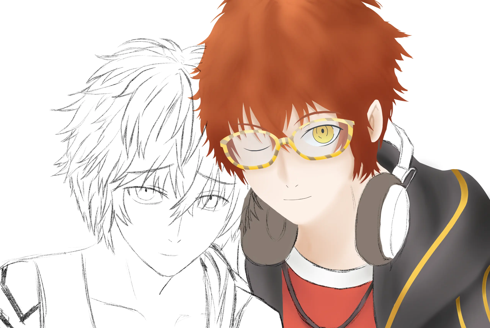
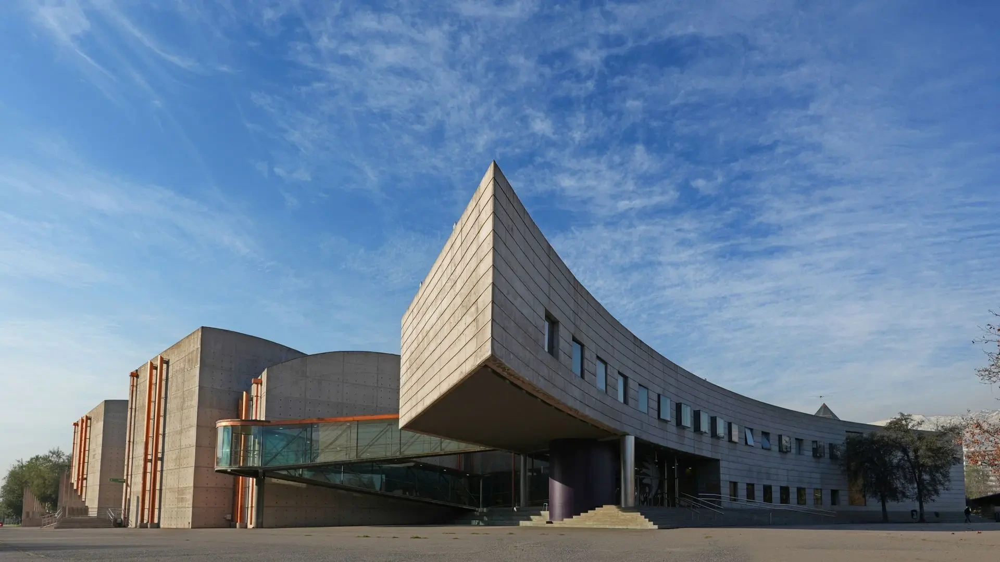

Desarrolladora Web · Diseñadora Digital · Storyteller · "Espacial" · Gamer
Hola, soy
Aránzazu Bersaluce!
Más que crear sitios web, construyo experiencias digitales que cuentan historias sin palabras. Mi formación como desarrolladora web, además de juegos digitales, me permite combinar creatividad, usabilidad y tecnología de forma única. Y mi sentido del humor... bueno, digamos que es un poco especial, hasta definirme como "subnormal" como chiste... pero es mi forma positiva de ver la vida ᓚᘏᗢ.
Curiosa como gato, siempre aprendo algo nuevo ᓚ₍ ^. .^₎

Mi crecimiento
Pasos largos o pequeños, cada uno de ellos me ha llevado a donde estoy hoy. Desde storytelling hasta programación, cada experiencia me ha formado como profesional y como persona.
La primera carrera
Mi viaje comenzó con Diseño de Juegos Digitales, donde desarrollé mi pasión por la narrativa interactiva y el uso de visuales para contar historias sin depender de texto. Ahí aprendí que cada decisión de diseño tiene una razón de ser, no es solo decoración o azar.
DireGrin: PartySaur
Trabajé para un amigo y mentor muy querido en su estudio intependiente de videojuegos, DireGrin. Mi primera tarea fue la creación de un GDD (Game Design Document) para diversos juegos, siendo el más destacado PartySaur, un juego de fiesta con dinosaurios. Luego pasé por modelado 3D de árboles con SpeedTree, lo que significó grandes horas de observación de árboles... No fue muy divertido eso.
Desarrollo Web
Con la crisis de los videojuegos en alza, debí buscar una nueva dirección profesional. Muerta de miedo por mi dificultad de entender programación, me lancé a aprender desarrollo web. Diseño enfocado en el usuario, HTML 5, CSS, SASS, JavaScript, JQuery, WordPress, PHP, MySQL, Ajax, API-Rest... Nada de depender de plugins o temas prehechos. Ahora es algo que disfruto mucho, aunque siga gritando por dentro y culpando a la capa 8 cada vez que algo no funciona, especialmente por un ";".
La desarrolladora histérica
Actualmente no dejo de trabajar en sitios web hasta lograrlo. ¿5 minutos o 13 horas? No me levanto de la silla hasta que funcione. Mi sentido del humor se ha vuelto un poco burlón contra mí mismo, pero es mi forma de lidiar con la frustración. ¿Y cuando sale todo bien? "¡TOMA ESO, CAPA 8!" y gritos internos de celebración, camuflados con cara de poker. ᓚ₍ ◣_◢ ₎
Qué es lo que sé hacer
Herramientas, lenguajes y habilidades que he desarrollado a lo largo de mi formación, proyectos y porque soy... especial para mis cosas.
Desarrollo Web · 5 habilidades
WordPress & Herramientas · 4 habilidades
Habilidades Creativas · 5 habilidades
Idiomas · 2 habilidades y... ¿1 flex?
La persona que se oculta detrás del código
¿Quién soy yo? Si supiera esa respuesta, no estaría preguntando! ̶Esta pequeña sección es una amalgama de lo que definen lo suficiente como para poder pasar como humano persona.

Gatos
Gato que veo, gato que acaricio. Cuando sea vieja, seré conocida como "la loca de los gatos". Si mis adorados gatos "Enano" y "Cochino" estuvieran vivos, me ayudarían a escribir esta sección, pero como no lo están, yo escribo por ellos: "po0lk,llmnmnmhjjiu7uy6hbgk".

Narrativa
Adoro crear historias de todo tipo, desde fanfics hasta relatos originales. Antes de dormir hago un pequeño ROL con una IA si mi amiga de rols no está conectada. Y no, los fics publicados quedan en el anonimato por el bien mental de todos.
Videojuegos
Diseñadora de juegos digitales, ULTRA fanática de juegos... Amo una buena historia, gameplay, música... ¿Y por qué no un poco de parry? Me pasé Clair Obscur con la torre infinita a base de parrys. (Que se muera el farolero cromático y toda su descendencia por tramposo. Aguante Simon.)

Películas
"Come with me, and you'll be in a world of pure imagination. Cinéfila de alma. Desde calidad pura, hasta el remake de "El quinteto de la muerte". Desde clásicos de culto, hasta cine moderno. Solo puedo decir una cosa: "¡YA MUÉRETE, DISNEY! ¡DEJA DE ARRUINAR TODO!"

Anime
Desde Steel Ball Run, hasta Gugure Kokkuri-san. Veo de prácticamente todo. Aunque AMO One Piece, no temo criticar lo que GODa hace mal. Y sí, también critico a muerte lo penca que fue el final de SNK y Mikasa Ackerman como el personaje más arrastrado de la historia (después de Jean).
Astronomía
La caminata espacial sin seguridad es la foto más terrorífica de todas, al igual que la interpretación de ondas y energía de los agujeros negros para simular su sonido... Pero dios, podría pasar mi vida entera aprendiendo sobre el espacio.

Aprendizaje
Desde investigaciones de accidentes aéreos, hasta datos inútiles. Solo puedo decir 2 cosas: Tus células blancas no saben de tus ojos, y que en el Somme se ganaron 324 kilómetros de territorio a cambio de 1.100.000 vidas.
Libros
Un poquito de todo (menos Homero). Vamos en camino a Fahrenheit 451 o Un Mundo Feliz... Sea como sea, me gusta leer... Y sí, "La Historia Sin Fin" técnicamente termina, pero la historia en sí es un ciclo eterno.

Arte Digital
Me encanta dibujar, aunque tengo una Wacom antigua que me regaló mi adorado abuelo. Dibujo poco, pero cuando lo hago, me entretengo... O pinto paneles de mangas que amo. Y como buena artista: Nunca termino mis dibujos.
Mis Trabajos Favoritos
Aunque cada uno, por separado, me provocaron enormes dolores de cabeza en cierta fase, siguen siendo sitios web que me encantaron crear o trabajar, ayudándome a aprender cosas nuevas de alguna forma u otra.

DESAFÍO
Rediseñar el sitio web del mim, específicamente del área de la astronomía.
SOLUCIÓN
Me encargué del diseño responsive del sitio, así como mejoras en la navegación de la línea de tiempo y optimización 3D.
Sitio responsive con línea de tiempo accesible desde el mapa del home page, así como modelos más livianos.
Ver Proyecto →DESAFÍO
Crear un sitio web que despliegue a todas las víctimas del monte Everest hasta la fecha.
SOLUCIÓN
Con llamados a Wikipedia, se extraen los datos de sus tablas para insertar los nombresy otra información en un scroll largo representando el tamaño del Everest.
El sitio web, a través de un scroll largo, muestra a todas las víctimas del monte Everest en las alturas respectivas, contador de personas y nacionalidades.
Ver Proyecto →DESAFÍO
Crear un sitio web de abogados con seguimiento de casos personales al conectar Excel con WordPress y registrando usuarios con contraseñas.
SOLUCIÓN
A través de vendor y una API de Google Cloud, se llama al Excel cada 12 horas para traer los datos nuevamente, sobreescribiendo los anteriores si hay cambios.
El sitio web, mediante Vendor y una API de Google Cloud, llama a un Excel con los clientes y sus datos para permitirles hacer seguimiento a sus propios casos de forma segura.
Ver Proyecto →DESAFÍO
Rediseñar completamente un sitio web con problemas de navegación y confuso, creando una experiencia visual acorde a la tienda y de mejor navegación.
SOLUCIÓN
Trabajo colaborativo, creando el código HTML5 y CSS, añadiendo descripciones y puntuación de productos.
Propuesta de rediseño completa con código limpio, semántico y completamente responsivo.
Ver Proyecto →Mis Inspiraciones
¿Qué es lo que me hace querer seguir haciendo todo tipo de proyectos?
Historias y Mundos
¿Cómo puedo crear un sitio web que transmita algo sin decir media palabra? La narrativa me ayuda demasiado en eso, desde psicología del color, hasta lenguaje utilizado. Todo lo que sé y aprendo, lo aplico.
Historias y Mundos
Fuente de inspiración
Experiencias Interactivas
Un sitio web estático no llama la atención. Imaginen entrar a una página web que solo sea texto, imágenes y con suerte, colores... ¡Tenemos pantallas por algo! ¡Que se mueva todo, interactivo, que descubras algo! Eso quiero.
Experiencias Interactivas
Fuente de inspiración
Aprender Tecnologías Nuevas
Las nuevas tecnologías me obligan a adaptarme constantemente. ¿Por qué no aprovechar de usarla para algo divertido y que sea de utilidad? Videos, imágenes, código un tanto más curioso... Todo lo que me llame la atención.
Aprender Tecnologías Nuevas
Fuente de inspiración
Proyectos Impulsados por Curiosidad
¿Qué pasaría si pudiera bajar por un sitio web del monte Everest que me muestre a todas las víctimas que han muerto ahí? ¿Qué tal un sitio web con un avión y que muestre cada parte de este, que haya sido causa de un accidente? La mejor forma de informar algo es llamando la atención y usar lo visual.
Proyectos Impulsados por Curiosidad
Fuente de inspiración
Conexión Humana
Detrás de cada proyecto, sea un comercio o para informar, está hecho por alguien que se detuvo a pensar y analizar, que decidió poner todo su esfuerzo en algo que ama y quiere compartir con el mundo. Siempre quiero dar lo mejor de mí y demostrarlo.
Conexión Humana
Fuente de inspiración
Belleza en los Detalles
Desde los colores, hasta la accesibilidad web. Quiero que cada proyecto se vea bien y que funcione bien... Y si puedo dejar un pequeño detalle, lo haré... ¿No me crees? ¡Abre la consola del sitio web para una sorpresita! O, si estás en PC, ingresa el código Konami! (↑ ↑ ↓ ↓ ← → ← → B A)
Belleza en los Detalles
Fuente de inspiración